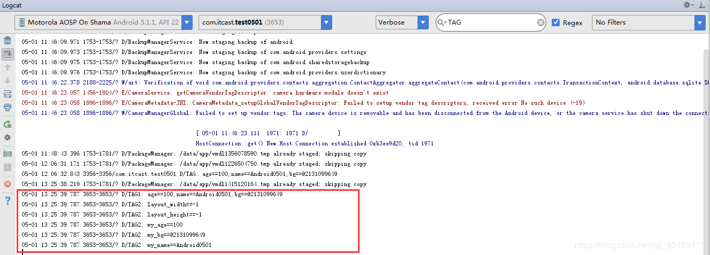

在自定义类继承View实现自定义控件的过程中，我们还应该对一些自定义属性有所了解。
我们通过一个案例来学习一下。
新建一个android项目，然后我们创建一个类MyAttributeView继承View。
贴出MyAttributeView的代码。
package com.itcast.test0501;
import android.content.Context;
import android.support.annotation.Nullable;
import android.util.AttributeSet;
import android.view.View;
/**
* 自定义属性
*/
public class MyAttributeView extends View {
public MyAttributeView(Context context, @Nullable AttributeSet attrs) {
super(context, attrs);
}
}然后我们在activity_main.xml文件来使用。
<?xml version="1.0" encoding="utf-8"?>
<RelativeLayout xmlns:android="http://schemas.android.com/apk/res/android"
xmlns:app="http://schemas.android.com/apk/res-auto"
xmlns:tools="http://schemas.android.com/tools"
android:layout_width="match_parent"
android:layout_height="match_parent"
tools:context="com.itcast.test0501.MainActivity">
<com.itcast.test0501.MyAttributeView
app:my_age="100"
app:my_name="Android0501"
app:my_bg="@drawable/a"
android:layout_width="match_parent"
android:layout_height="match_parent"/>
</RelativeLayout>发现没有，my_age，my_name，my_bg都是我们自定义的属性，前面的命名空间我们可以随意命名，不一定非得叫app。那现在运行项目的话显然是不行的，因为我们属性还没去定义呢。
那么接下来我们就去定义我们的属性。
在values文件夹下新建attrs.xml文件。
<?xml version="1.0" encoding="utf-8"?>
<resources>
<!--定义名字为MyAttributeView的属性集合-->
<declare-styleable name="MyAttributeView">
<!--定义名字为my_name，并且类型为string的属性-->
<attr name="my_name" format="string" />
<!--定义名字为my_age，并且类型为integer的属性-->
<attr name="my_age" format="integer" />
<!--定义名字为my_bg，并且类型为reference|color的属性-->
<attr name="my_bg" format="reference|color" />
</declare-styleable>
</resources>这样我们的属性就定义好了。
我们可以思考一下，一个类在布局文件中使用，它是如何被呈现到屏幕上的，我们知道，在java中，一个类要想被使用，该类就必须被实例化，那么在android中，它是如何对这个自定义的View类进行实例化显示的呢？它使用的是反射技术。它会把所有属性封装到AttributeSet类中，那么你会发现，在自定义类中重写的构造方法的参数里就存在这么一个属性的集合类。所以我们就可以知道为什么自定义的控件需要写类的全路径，因为反射是需要一个类的完整路径的。在编译的时候，会对布局文件进行pull解析，遇到类，就利用类路径通过反射技术封装属性。
那接下来就是获取属性了，获取属性我们有三种方式。
1、用命名空间去获取
2、遍历属性集合
3、使用系统工具，获取属性
修改MyAttributeView类的代码。
package com.itcast.test0501;
import android.content.Context;
import android.content.res.TypedArray;
import android.graphics.Bitmap;
import android.graphics.BitmapFactory;
import android.graphics.drawable.BitmapDrawable;
import android.graphics.drawable.Drawable;
import android.support.annotation.Nullable;
import android.util.AttributeSet;
import android.util.Log;
import android.view.View;
/**
* 自定义属性
*/
public class MyAttributeView extends View {
private int myAge;
private String myName;
private Bitmap myBg;
public MyAttributeView(Context context, @Nullable AttributeSet attrs) {
super(context, attrs);
//获取属性三种方式
//1、用命名空间去获取
String age = attrs.getAttributeValue("http://schemas.android.com/apk/res-auto", "my_age");
String name = attrs.getAttributeValue("http://schemas.android.com/apk/res-auto", "my_name");
String bg = attrs.getAttributeValue("http://schemas.android.com/apk/res-auto", "my_bg");
Log.d("TAG1","age==" + age + ",name==" + name + ",bg==" + bg);
//2、遍历属性集合
for(int i = 0;i < attrs.getAttributeCount();i++){
Log.d("TAG2",attrs.getAttributeName(i) + "==" + attrs.getAttributeValue(i));
}
//3、使用系统工具，获取属性
}
}运行项目，查看日志。

这样就把我们设置的属性值拿出来了。
但是，不知道大家发现了没有，这两种方法拿到的图片值都是地址值吧，我们要想将设置的图片属性值通过某种方法显式到屏幕上，对于地址值，我们有办法操作吗？应该是没有的，所以，我们采用第三种方式，使用系统工具来获取属性值。
我们修改MyAttributeView的代码。
package com.itcast.test0501;
import android.content.Context;
import android.content.res.TypedArray;
import android.graphics.Bitmap;
import android.graphics.BitmapFactory;
import android.graphics.Canvas;
import android.graphics.Paint;
import android.graphics.drawable.BitmapDrawable;
import android.graphics.drawable.Drawable;
import android.support.annotation.Nullable;
import android.util.AttributeSet;
import android.util.Log;
import android.view.View;
/**
* 自定义属性
*/
public class MyAttributeView extends View {
private int myAge;
private String myName;
private Bitmap myBg;
public MyAttributeView(Context context, @Nullable AttributeSet attrs) {
super(context, attrs);
//获取属性三种方式
//1、用命名空间去获取
String age = attrs.getAttributeValue("http://schemas.android.com/apk/res-auto", "my_age");
String name = attrs.getAttributeValue("http://schemas.android.com/apk/res-auto", "my_name");
String bg = attrs.getAttributeValue("http://schemas.android.com/apk/res-auto", "my_bg");
Log.d("TAG1","age==" + age + ",name==" + name + ",bg==" + bg);
//2、遍历属性集合
for(int i = 0;i < attrs.getAttributeCount();i++){
Log.d("TAG2",attrs.getAttributeName(i) + "==" + attrs.getAttributeValue(i));
}
//3、使用系统工具，获取属性
TypedArray typedArray = context.obtainStyledAttributes(attrs,R.styleable.MyAttributeView);
for(int i = 0;i < typedArray.getIndexCount();i++){
int index = typedArray.getIndex(i);
switch (index){
case R.styleable.MyAttributeView_my_age:
myAge = typedArray.getInt(index,0);
break;
case R.styleable.MyAttributeView_my_name:
myName = typedArray.getString(index);
break;
case R.styleable.MyAttributeView_my_bg:
Drawable drawable = typedArray.getDrawable(index);
BitmapDrawable drawable1 = (BitmapDrawable) drawable;
myBg = drawable1.getBitmap();
break;
}
}
}
@Override
protected void onDraw(Canvas canvas) {
super.onDraw(canvas);
Paint paint = new Paint();
canvas.drawText(myName + "---" + myAge,50,50,paint);
canvas.drawBitmap(myBg,60,60,paint);
}
}通过系统工具，我们可以把图片的属性值转换为Bitmap，然后在onDraw()方法中将位图绘制出来。
我们运行项目，预览效果。
我们设置的属性信息都被成功绘制上来了。
由此，我们必须得掌握第三种获取属性值的方法，前两种有能力去掌握的也可以去理解一下。
源码我已上传至GitHub，感兴趣的同学可以下载阅读一下。
点击下载源码